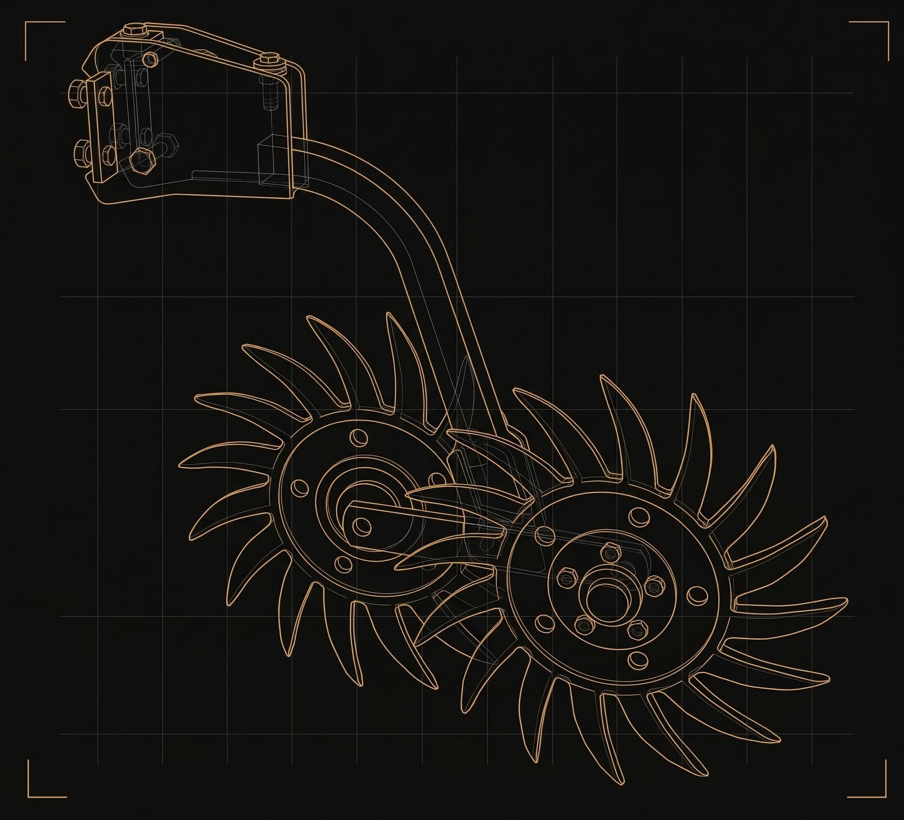

// Sternräder
Gegossene Sternräder mit 50 kg Federandruck
Der STERN Rotationsstriegel arbeitet ganzjährig — vor der Aussaat zur Saatbettvorbereitung, nach der Aussaat zur Rückverfestigung und Unkrautbekämpfung. Gegossene Sternräder mit 50 kg Federandruck pro Reihe sorgen für gleichmäßige Bearbeitung.
- 50 kg Federandruck pro Reihe
- Gegossen — wartungsarm und langlebig
- Gleichmäßige Bodenbearbeitung bei allen Geschwindigkeiten

// Einreihenverstellung
Ein Bolzen pro Reihe — einfach und schnell
Einfachste Einstellung: 1 Bolzen pro Reihe. Schnelle Anpassung an verschiedene Bearbeitungstiefen und Kulturen — direkt am Feld, ohne Werkzeug.
- 1 Bolzen pro Reihe — kein Werkzeug nötig
- Stufenlose Tiefeneinstellung
- Umbau in wenigen Minuten

// Option Dünger & Saat
Gleichzeitig striegeln, düngen und säen
Optionaler Dünger- und Saatgutbunker für gleichzeitige Ausbringung — Striegeln, Düngen und Aussaat in einem Durchgang. Ideal für Direktsaat und Zwischenfruchtanbau.
- Dünger- und Saatgutbunker kombinierbar
- Ideal für Zwischenfruchtaussaat
- Weniger Überfahrten, mehr Effizienz